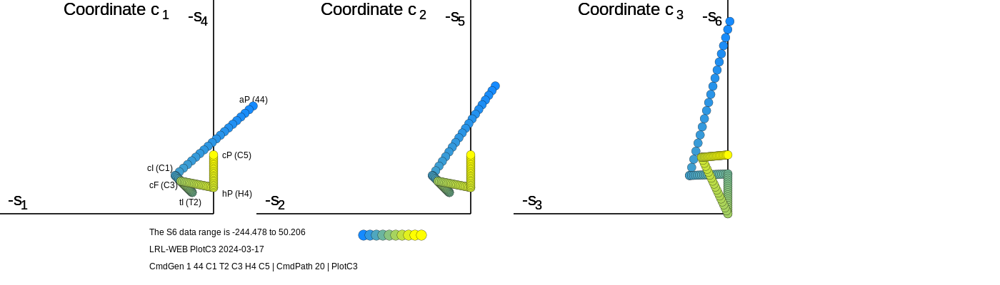
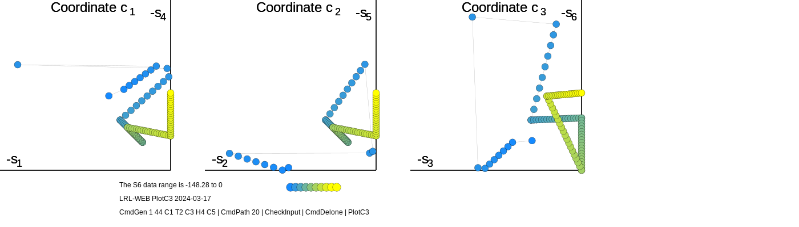
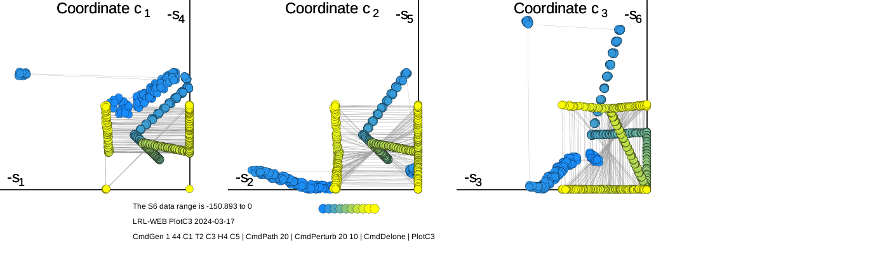

Lattice Representation Library for the Web
1. Introduction
Welcome to the tutorial!
We hope you can find some things here that are interesting/useful/educational.
If not, an occasional laugh will make everyone feel better.
What is this website?
LRL_WEB is designed to provide a workspace/playground for investigating
various aspects of crystallographic unit cells/lattices. We may use the
terms unit cell and lattice quite interchangeably, but you should realize that
technically they are not the same things; however, they are alternate
ways to describe a crystal's lattice.
What is a unit cell?
You can think of a crystal as a stacking of identical boxes to generate
a 3-dimensional lattice. Each box is the same (and, although it's not important
here, even the contents of each box are the same). We talk about "the
unit cell", but there are many choices of the box in any lattice. The
most common way for crystallographers to describe the box (i.e., unit cell)
is by listing the lengths of three unique edges and the angles between them.
But there are other ways to describe the box. In this web site, you can
change the representation to other kinds. One list the three 3-D vectors that
are the unique edges (call B4, on the website). Another useful (to crystallogaphers)
one is the three dot products between the edges and the additional three
dot products of each edge with the negative of the vector sum of them.
So what can you do on this web site?
-- there are tools to generate or modify unit cells
-- there are tools to report some properties of unit cells
-- there are tools to convert from one representation of a lattice to another
-- there is a limited selection of tools to report lattice properties
Structure of the web site
At the bottom of the title section, there is a "Submit" button (and those are
also in several places in the left column). That button causes selected calculations
to be executed.
Immediately below that section is a place to select "Number of operation windows". Each
operation executes a single command/program to perform a selected task.
The left hand column contains several items. The large selection box allows the choice
of a single operation to perform; the operation will put its results into the
"Tool Output" box immediately to the right.
The intent is that operations specified for one input can be chained together
to be used by the following one.
Immediately above the "Tool Output" box is a box labeled "Input data"; The Input data
box only is shown if the left-hand choice of "use new input" is selected. The choice of
"use prior output" directs to use the data shown in the adjacent "Tool Output" window
as the "source of data".
2. Getting started
In principle, you can use this web site without knowing any crystallography
or even without doing any entries. Let's do a simple example.
At the top for "Number of operation windows", choose "1".
In the left-hand column, choose "use new data.
In the "Select an operation" box, choose "Generate cells of a particular type or types".
When you do that, two new boxes appear above "Input data": "Number of each type"
and "Lattice type". For Number of each type, input "2"; for Lattice type, change "all"
(or whatever is in that box) to "A2" (in the space S6 A2 selects
the Delone type of triclinic (anorthic) lattices with one zero).
Click on "Submit".
In the "Tool Output" window, the program writes:
; Generate cells
; Delone lattice type requested
; lattice type = A2
G6 31.196 131.880 109.653 -95.279 -5.133 0.000 Delone# = A2 aP
G6 27.012 164.974 111.066 -169.317 -46.120 0.000 Delone# = A2 aP
;
end
This program outputs its data in G6 representation. In this case,
notice the zero value for g6 (90 degrees), which defines case A2.
Of course, crystallographers are more used to seeing the lattice parameters
as lengths and angles. So let's do that.
Change the "Number of operations" to "2". When you do that, a second set of
boxes appears so that you can choose a following operation.
For operation #2, choose "compute side-angle cells (a, b, c, α, β, γ)".
Make sure that the "Source of data" is set to "use prior output".
Click "Submit". The result should appear in the "Tool Output" window for operations #2.
; To Cell
P 5.585 11.484 10.472 113.338 92.515 90.000
P 5.197 12.844 10.539 128.713 114.898 90.000
end
That's the operations guide for almost everything on the site. One important thing
remains: how to input your own data. So let's do a simple example.
In the "number of operations" box, select "3".
In the first "Select an operation" box, select "Check input".
Enter two lines of data:
P 10 10 10 90 90 90 (a simple cubic unit cell)
p 10 10 x10 90 90 90 (note the error in the fourth entry)
and follow with "end" if it not already there
In the second "Select an operation" box select "compute perturbed versions of input cells".
When you do that, above the second "Tool output" window, two items appear requesting
"Number of perturbations" and "Parts per thousand; enter "5" and "10" for those.
In the third "Select an operation" box, select "compute volumes of listed cells".
Make sure that the second and third operations specify "use prior output".
Finally, click on "Submit".
The results now appear in the 3 "Tool output" windows.
First output window:
; CheckInput
; invalid cell parameter (A)
P 10.000 10.000 10.000 90.000 90.000 90.000
end
Note two things here: first the invalid cell was detected on input; second,
the warning message is begun with a semicolon, which will be ignored in
succeeding programs using the output for input.
Second output window:
; Perturb vectors
P 10.000 10.000 10.000 90.000 90.000 90.000 original inputCell
P 9.940 9.916 9.884 89.573 89.357 89.565 perturbed
P 10.016 10.029 9.960 89.567 90.358 90.109 perturbed
P 9.956 9.921 9.929 89.938 89.497 89.452 perturbed
P 9.896 9.992 10.053 90.576 89.709 89.376 perturbed
P 9.969 9.989 9.984 90.509 89.490 89.668 perturbed
;
The thing to notice here is that the perturbed cells are all very
similar to the original input cell. That's not surprising since we
only requested 1% change.
Third output window:
; Volume
P 10.000 10.000 10.000 90.000 90.000 90.000 Volume = 1000
P 9.940 9.916 9.884 89.573 89.357 89.565 Volume = 974.101
P 10.016 10.029 9.960 89.567 90.358 90.109 Volume = 1000.44
P 9.956 9.921 9.929 89.938 89.497 89.452 Volume = 980.639
P 9.896 9.992 10.053 90.576 89.709 89.376 Volume = 993.926
P 9.969 9.989 9.984 90.509 89.490 89.668 Volume = 994.114
end
Note that the volumes are near to the value of the unperturbed cell (1000). The
1% change request is calculated in the S6 space, so the volumes
and the cell parameters do not directly reflect that amount.
------------------------------------------------------------------------
Let's do another example. We'll create a series of points from one
lattice to another, change the presentation to a, b, c, α, β, γ
just so we can look at the cell parameters,
and then calculate the distances between the points.
To begin, set the number of operations to 3. The first one should be for
new input, and the later 2 for using prior input.
For the first operation, in the "Input data" box, type:
p 10 10 10 90 90 10.1
p 10 10 10 90 90 170.1
end
and choose: "compute path between pairs of cells".
For the second operation, choose "compute side-angle cells (a, b, c, α, β, γ)",
and "use prior data".
For the third operation, choose "compute NCDist and CS6Dist distances",
and "use prior data".
Click on "Submit".
In the first "Tool output" window, we see:
; Path generator
; no. of points output is 20
S 0.00000 0.00000 98.45032 -198.45032 -198.45032 -100.00000 1
S 0.00000 0.00000 88.08394 -188.08394 -188.08394 -100.00000 2
...
In the second "Tool output" window, we see:
; To Cell
P 10.000 10.000 10.000 90.000 90.000 10.100
P 10.000 10.000 10.000 90.000 90.000 28.256
P 10.000 10.000 10.000 90.000 90.000 38.997
P 10.000 10.000 10.000 90.000 90.000 47.661
...
And in the third "Tool output" window, we see:
; CmdDists, calculate distances
; ordinals G6-Euclidean NCDist CS6Dist ___ G6-Euclidean NCDist CS6Dist ordinals
; 1 to 2 20.732 29.320 17.247 ___ 20.732 29.320 17.247 1 to 2
; 2 to 3 20.732 29.320 17.955 ___ 41.465 58.640 35.106 1 to 3
...
; 8 to 9 20.732 20.732 17.954 ___ 165.862 100.848 83.774 1 to 9
; 9 to 10 20.732 20.732 17.954 ___ 186.594 97.168 91.915 1 to 10
; 10 to 11 20.732 0.119 0.103 ___ 207.326 97.177 93.381 1 to 11
; 11 to 12 20.734 20.734 17.956 ___ 228.060 100.882 83.735 1 to 12
; 12 to 13 20.733 20.733 17.955 ___ 248.793 108.492 78.929 1 to 13
...
P 10.000 10.000 10.000 90.000 90.000 10.100 1
P 10.000 10.000 10.000 90.000 90.000 28.256 2
P 10.000 10.000 10.000 90.000 90.000 38.997 3
P 10.000 10.000 10.000 90.000 90.000 47.661 4
P 10.000 10.000 10.000 90.000 90.000 55.260 5
So what have we learned here? In the first output, we see the cells in S6
format, but in the second, we see them in the more familiar a, b, c α, β, γ.
Finally, in the third output window, we the NCDist and CS6Dist distance between neighboring
points Those are followed by the unit cells listed along with their ordinals. In the last
two columns the distances are relative to the first point.
Examining the output, we see the NCDist and CS6SDist distances changing more or less smoothly
(in the 20s and 17s), except for the distance
between cells 10 and 11 (about 0.1-0.2). How can we examine the cause of that anomaly
in more detail?
Change the number of operations to 5. For operation 4, change to ""use new data"".
Go to the output window for operation 3, and
copy the cells for ordinals 10 and 11:
P 10.000 10.000 10.000 90.000 90.000 87.046 10
P 10.000 10.000 10.000 90.000 90.000 92.988 11
and paste them into the Tool input window for operation 4.
Make sure to select ""use new data"", and choose
"compute Niggli-reduced primitive cells".
Add "end" after the two cells.
For operation 5, make sure it says use "prior data", and choose
"apply Lattice Matching algorithm to listed cells", and click "Submit".
For the output of operation 4, we see the output:
; Niggli reduced
G6 100.000 100.000 100.000 -0.000 0.000 -10.307
G6 100.000 100.000 100.000 0.000 0.000 -10.425
end
And for the output of operation 5, we see:
; Lattice Matching
P 10.000 10.000 10.000 90.000 90.000 92.954 ( 0 degrees in S6) REFERENCE
P 10.000 10.000 10.000 90.000 90.000 92.988 ( 0.026989 degrees in S6)
end
The space of alternative unit cells for the second cell has been searched for
the one most similar to the REFERENCE cells. The cell parameters look quite
similar, and the angle between the reference vector and that of the search
vector is quite small in S6.
-----------------------------------------------------------------------
Yet another example.
Prelude:
Several structures of krait venom toxin phosphorolase A2 have been reported. Several
space groups have been reported, but LeTrong and Stenkamp, 2007, have determined that some are actually
the same. Two examples are:
r 57.10 57.10 57.10 89.75 89.75 89.75 2OSN hR
C 80.95 80.57 57.1 90 90.35 90 1G2X mC
To begin, set the number operation windows to 1. Input the two cell above into the above cells into
the Input Data window. Select "Sella" as the operation,
and click on "Submit" .
In the Output window, we see:
; SELLA method symmetry searching
; Sella graphics file SEL_2024-03-14.13_57_35_35bf2e_0.svg
; Sella graphics file SEL_2024-03-14.13_57_35_35bf2e_1.svg
; Sella cell block start 0
...
(followed by a considerable output that we will ignore here).
(The graphics file names will be different for your test.)
Of course, the diagram for the first file finds that the match for hR (Rhombohedral) is zero, since it was input
as rhombohedral. The second file has a distance from hR equal to 1.14,
indicating a likely match.

 Of course, we now face the question of what the rhombohedral cell of the second cell
looks like. For that purpose, we can use lattice matching.
Change the operation selection to "Matching", and click "Submit". Here is the result:
; Lattice Matching
R 57.100 57.100 57.100 89.750 89.750 89.750 ( 0 degrees in S) REFERENCE
R 57.106 57.100 57.106 89.752 89.730 89.752 ( 0.013 degrees in S6
We see immediately that the cells are quite similar, and the angle
between is quite small (in S6).
------------------------------------------------------------------------
And just one more example.
Part 1
Set the number of operations to 3.
For the first operation, choose "Generate cells"
Set the first parameter to 1.
Set the second parameter to "44 C1 T2 C3 H4 C5"
(this is a list of one triclinic cells and one of each of the Delone lattice types, 1-5.)
Of course, we now face the question of what the rhombohedral cell of the second cell
looks like. For that purpose, we can use lattice matching.
Change the operation selection to "Matching", and click "Submit". Here is the result:
; Lattice Matching
R 57.100 57.100 57.100 89.750 89.750 89.750 ( 0 degrees in S) REFERENCE
R 57.106 57.100 57.106 89.752 89.730 89.752 ( 0.013 degrees in S6
We see immediately that the cells are quite similar, and the angle
between is quite small (in S6).
------------------------------------------------------------------------
And just one more example.
Part 1
Set the number of operations to 3.
For the first operation, choose "Generate cells"
Set the first parameter to 1.
Set the second parameter to "44 C1 T2 C3 H4 C5"
(this is a list of one triclinic cells and one of each of the Delone lattice types, 1-5.)
For the second operation, choose "Path"
For the third operation, choose "PlotC3"
Click on "Submit" .
In the Output Window for the first operation, we see:
; Generate cells
; Niggli lattice types requested
G6 103.159 109.653 163.076 100.412 62.392 5.133 IT# = 44 aP
; Delone lattice type requested
G6 145.766 145.766 145.766 -97.177 -97.177 -97.177 Delone# = C1 cI
; Delone lattice type requested
G6 54.106 54.106 104.724 -54.106 -54.106 0.000 Delone# = T2 tI
; Delone lattice type requested
G6 82.864 82.864 82.864 -82.864 -82.864 0.000 Delone# = C3 cF
; Delone lattice type requested
G6 66.691 66.691 71.740 0.000 0.000 -66.691 Delone# = H4 hP
; Delone lattice type requested
G6 43.675 43.675 43.675 0.000 0.000 0.000 Delone# = C5 cP
In the Output Window for the second operation, we see:
; Path generator
; no. of points output is 100
; path segment 1
S 50.20600 31.19600 2.56650 -136.92150 -162.42550 -244.47800 segment 1 point 1 count 1
S 45.00629 26.99682 -0.12587 -132.27242 -156.43411 -234.16805 segment 1 point 2 count 2
S 39.80658 22.79763 -2.81824 -127.62334 -150.44271 -223.85811 segment 1 point 3 count 3
... and lots more ...
In the Output Window for the third operation, we see:
; PlotC3
; Graphical output SVG file = PLT_2024-03-17.14_32_14_35ddd8_0.svg
The S6 data range is -244.478 to 50.206
P 10.157 10.472 12.770 67.948 76.083 88.617
P 10.267 10.562 12.734 70.451 78.083 90.067
P 10.375 10.651 12.699 72.884 80.036 91.461
P 10.483 10.740 12.663 75.258 81.946 92.805
P 10.589 10.828 12.627 77.580 83.818 94.102
...
P 8.600 8.600 8.631 90.000 90.000 92.720
P 8.625 8.625 8.640 90.000 90.000 91.352
P 8.650 8.650 8.650 90.000 90.000 90.000
; Number of points: 100
P 10.16 10.47 12.77 67.95 76.08 88.62
P 10.27 10.56 12.73 70.45 78.08 90.07
P 10.38 10.65 12.70 72.88 80.04 91.46
...
P 8.65 8.65 8.65 90.00 90.00 90.00... and lots more ...
Click on the graphics file name (PLT_2024-03-17.14_32_14_35ddd8_0.svg in this example), to display the C3 plot.

So what do we learn from that? First as expected, the generated path is a single line from
the first point to the final point. The line takes sharp turns at each waypoint in the path.
The line starts with a blue point that is not inside the all negative-orthant; that is because
it is generated as a Niggli point for an all-plus cell. The other 5 points are all within the
the orthant because they are all generated from the Delone descriptions of Selling-reduced
cells.
Part 2
Set the number of operations to 5.
(We will only need 4 for this part, but 5 will make the next step simpler.)
Set operation 3 to Check Input
Set operation 4 to Delone (reduction).
Set operation 5 to PlotC3
Click on "Submit" .
In Output window 5, we see:
PlotC3
; Graphical output SVG file = PLT_2024-03-17.15_25_36_35de94_0.svg
The S6 data range is -148.28 to 0
P 14.277 10.472 13.127 115.624 116.710 108.581
P 15.325 10.562 12.734 109.549 117.516 114.227
P 15.859 10.651 12.699 107.116 119.331 114.791
P 16.375 10.740 12.663 104.742 121.110 115.327
P 16.876 10.828 12.627 102.420 122.862 115.839
...
P 8.600 8.600 8.631 90.000 90.000 92.720
P 8.625 8.625 8.640 90.000 90.000 91.352
P 8.650 8.650 8.650 90.000 90.000 90.000
; Number of points: 100
P 14.28 10.47 13.13 115.62 116.71 108.58
P 15.32 10.56 12.73 109.55 117.52 114.23
P 15.86 10.65 12.70 107.12 119.33 114.79
...
P 8.65 8.65 8.65 90.00 90.00 90.00
end
Click on the graphics file name (PLT_2024-03-17.15_25_36_35de94_0.svg in this example), to display the C3 plot.

So what do we learn from this example. The light gray lines are drawn between adjacent points in the input. If the
line is long, then the points are relatively far apart (note that in the first part, all adjacent points were close). As is
well-known, no unit cell reduction is perturbation-stable.
Part 3
Change the choice of Operation 3 to Perturb, with arguments 20 and 10 (20 perturbations
and 1% changes)
Click on "Submit" .
In Output window 5, we see:
; PlotC3
; Graphical output SVG file = PLT_2024-03-17.15_37_06_35df2a_0.svg
The S6 data range is -150.893 to 0
P 14.277 10.472 13.127 115.624 116.710 108.581
P 13.871 10.303 12.699 114.575 116.086 109.527
P 14.316 10.517 12.984 115.515 116.136 109.227
P 14.112 10.391 13.013 115.448 116.883 108.167
P 14.157 10.465 13.358 116.057 118.280 107.067
...
P 14.828 8.672 8.608 90.262 124.860 125.202
P 8.679 8.632 8.748 90.297 90.372 90.052
P 12.081 12.074 8.595 90.178 134.967 119.523
; Number of points: 2100
P 14.28 10.47 13.13 115.62 116.71 108.58
P 13.87 10.30 12.70 114.57 116.09 109.53
P 14.32 10.52 12.98 115.52 116.14 109.23
...
P 12.08 12.07 8.60 90.18 134.97 119.52
Click on the graphics file name (PLT_2024-03-17.15_37_06_35df2a_0.svg in this example), to display the C3 plot.

So what do we learn from this example. Again,light gray lines are drawn between adjacent points in the input.
But now there are many more lines, further emphasizing that computing the smallest distance between two point
is not simply a matter of cell reduction followed by calculating the Euclidean distance between. Here, many
points that were close together, now are relatively far apart in this simple projection.
------------------------------------------------------------------------
3. Input types for LRL_WEB
here are 5 types of input lines.
Except for "END", they can be combined in any order. All these are case-insensitive.
If a particular input lattice is invalid, it is rejected with a message.
--- RANDOM: Generate a random (valid) unit cell (a, b, c, α, β, γ);
--- Crystal lattice input: "A", "B", "C", "P", "R", "F", "I" followed
by a, b, c, α, β, γ (in degrees);
--- semicolon: lines beginning with a semicolon are treated as comments
--- Vector Input: g (or v or g6) for G6 vectors; s (or s6) for S6,
Delone/Selling scalars, C3 for C3 input (without parentheses or
commas, "C" would be interpreted as a C-centered unit cell),
u for unsorted Dirichlet 7-cells.
--- END: ends the data input section
4. Overview of available programs
As of 2023/11/25, there are 22 programs available. A few more may be
added later. Except for unit cell generation, all the programs read lattice
information. Most write output that can be used as input to succeeding programs.
Information
Check Input: -- Read the input and rejects invalid unit cells
Distances: -- compute NCDist and CS6Dist distances
Volume: -- compute volumes of listed cells
Sella: -- apply Sella algorithm (graphics)
Andrews, L. C., Bernstein, H. J., & Sauter, N. K. (2023).
SELLA--A Program for Determining Bravais Lattice Types.
arXiv preprint arXiv:2303.03122.
PlotC3: -- draw C3 plot of input cells
Dirichlet: -- draw Dirichlet (Voronoi) cells of input cells
Output Only
Generate cells: -- Generate cells of a particular type or types
Type Conversion
To B4: -- compute Bravais tetrahedron (B4)
To C3: -- compute complex cell presentation (C3)
To Cell: -- compute side-angle cells (a, b, c, α, β, γ)
To G6: -- compute G6 version of cells
To S6: -- compute S6 version of cells
To S6L: -- compute linearized S6 or Root Invariant version of cells.
Bright, Cooper, and Kurlin (2021)
To Dirichlet: -- compute unsorted Dirichlet cells (dc7unsrt)
Andrews, L. C., Bernstein, H. J., & Xerri, M. (2023)
To V7: -- compute V7 versions of cells
Unit cell reduction
Delone: -- compute Selling-reduced primitive cells
Niggli: -- compute Niggli-reduced primitive cells
Modify Input
Matching: -- apply Lattice Matching algorithm to listed cells
Path: -- compute path(s) between pairs of cells
Perturb: -- compute perturbed versions of input cells
S6Reflecions: -- apply S6 reflections to input cells
Scale: rescale cells to reference cell
Updated: 18 March 2024